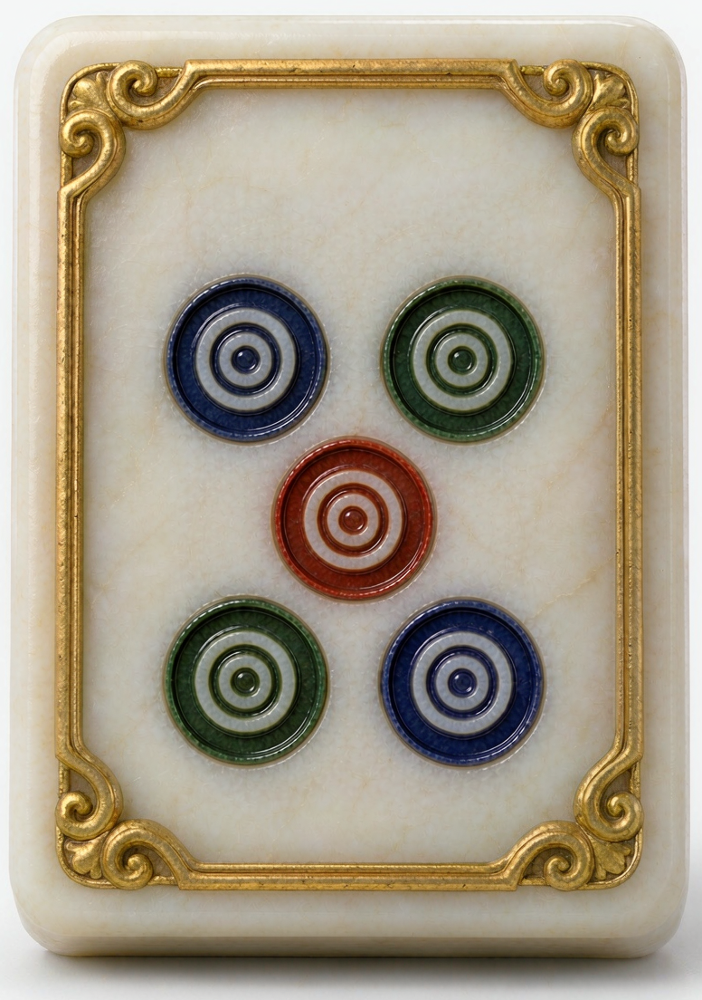
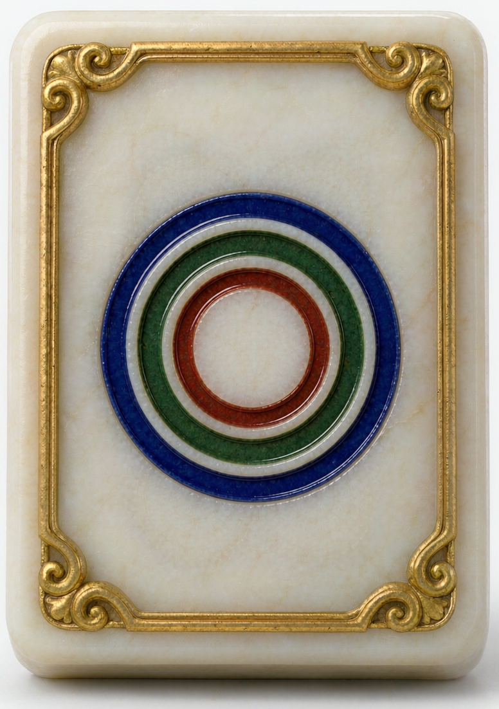
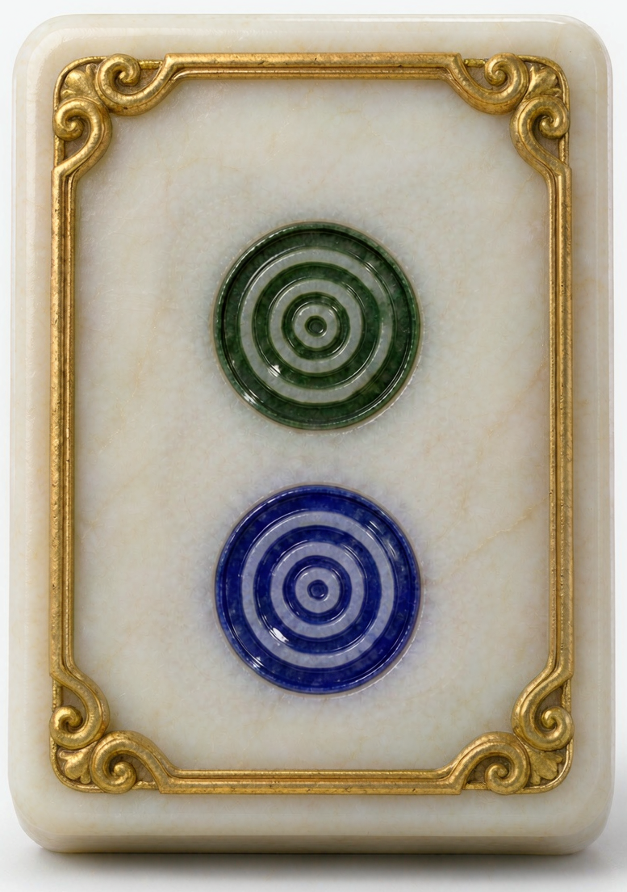
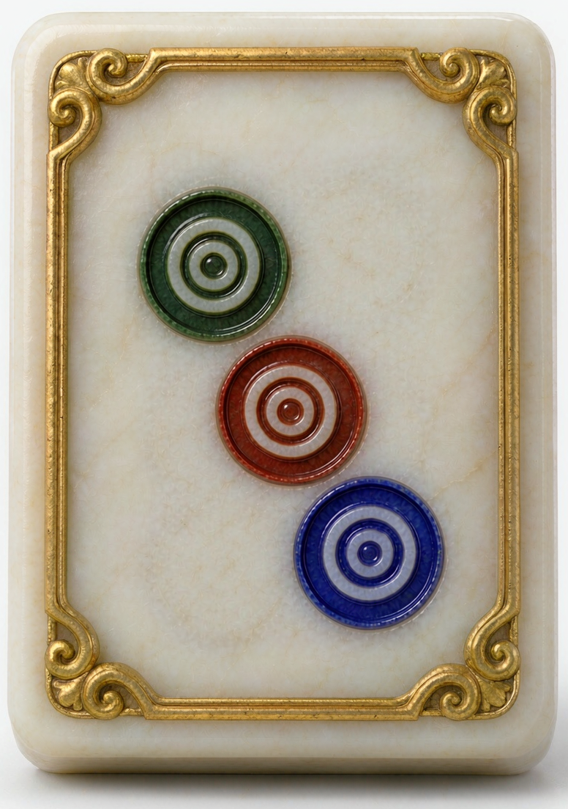

游 戏 规 则
✕
一、麻将配对消除

碰三张完全相同的牌
不限花色 · 凑齐三张即自动消除



吃同一花色连号三张
必须同花色 · 凑齐三张即自动消除
被压住的牌不可点 · 槽位塞满仍未成组 → 本局失败
二、掷骰点数对应表
| 和值 | 档位 | 本局赠送 |
|---|---|---|
| 2 · 12 | 复活档 | 复复活 ×1 |
| 3 · 11 | 加槽档 | |
| 4 · 10 | 常规档 | |
| 5 · 9 | 常规档 | |
| 6 · 8 | 常规档 | |
| 7 | 常规档 |
赠礼道具「仅限本局使用」—— 本局结束或提前退出即作废，不计入累积。